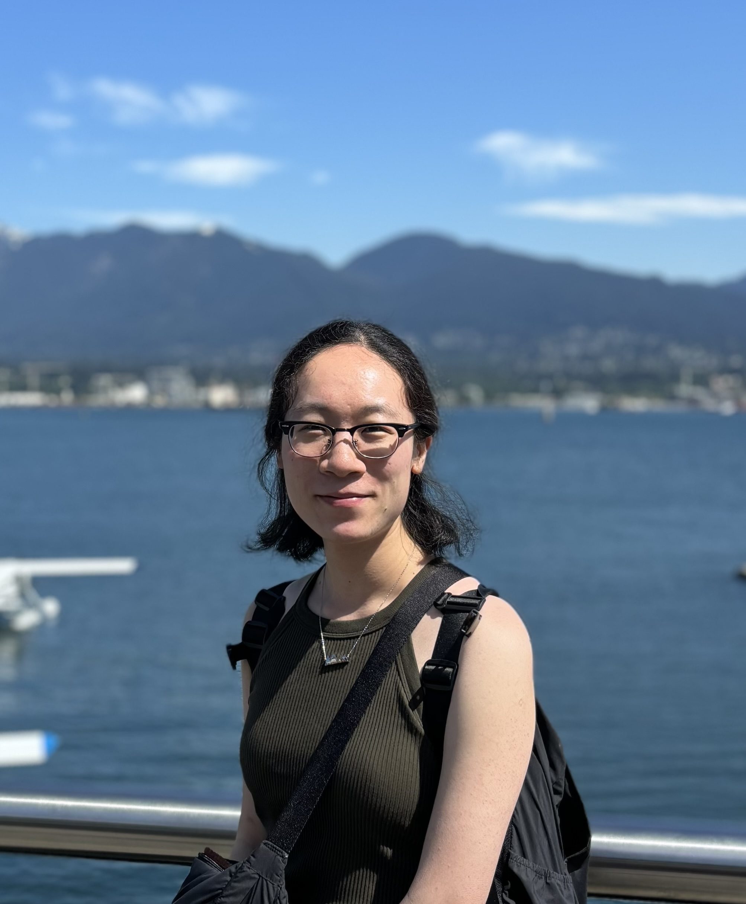

About
Qixia Luo

I am currently a PhD student in the Department of Mathematics and the Institute of Applied Mathematics at The University of British Columbia in beautiful Vancouver, British Columbia. I am working with Prof. Elina Robeva on algebraic statistics and mathematical questions related to data science.
In July, 2025, I obtained my MSc from the Department of Mathematics and Statistics at Queen's University at Kingston, where I worked with Prof. James A. Mingo on free probability and random matrix theory.
In June, 2022, I obtained my Honours BSc from the University of Toronto, where I graduated with honours and high distinction in mathematics and statistics.
Summer Reading Program
Finite Frames SRP 2026
This page is reserved for material, schedule, and other information for the Finite Frames SRP 2026 project.
The Summer Reading Program (SRP) at UBC is a program for undergraduate students who are interested in learning a topic in math beyond the standard undergraduate curriculum. Each summer, selected undergraduate students are matched with mentors who are graduate students or postdoctoral researchers at UBC. For more information, see UBC MATH SRP.
This summer, I have decided to create a group to learn about finite frames, which is a fascinating area of mathematics that lies at the intersection of several areas of math that is currently undergoing active research, with exciting applications to many areas such as signal processing, quantum information theory, and data science, to name a few.
The reason for the focus on finite frames is twofold.
- In practical applications, we always work with finite-dimensional spaces.
- Since functional analysis is not a prerequisite for participation in this reading program (participants are in years 1-3 of their undergraduate studies), studying frames in the finite dimensional setting is the accessible way to introduce them to this subject.
Despite the restriction to the simplified finite-dimensional setting, we will still be able to go surprisingly far. After we learn about the basics of finite frame theory, we will already be ready to explore recently resolved problems such as the Paulsen Conjecture as well as open problems such as Zauner's Conjecture. The participants will write a report or do a presentation on a cutting-edge topic at the end of the program.
The basic content of the reading program will be guided by the following two books:
- Frames for Undergraduates (Han, Kornelson, Larson, Weber, 2007)
- Finite Frames: Theory and Applications (Casazza, Kutyniok, 2013)
Schedule
-
Week 1
Reading: Sections 3.1, 3.2 and 3.3 in Frames for Undergraduates- June 1: Introductions. Overview and expectations of the SRP. Review of linear algebra concepts (hilbert spaces, bases, orthonormal bases). Motivation of the study of frames. Definition of a frame. Equivalent deinfitions of a frame in finite dimensions. First examples of frames (including the Mercedes-Benz frame).
- June 5: Parseval frames. Dual frames and the reconstruction formula. The synthesis, analysis, and frame operators. Redundancy.